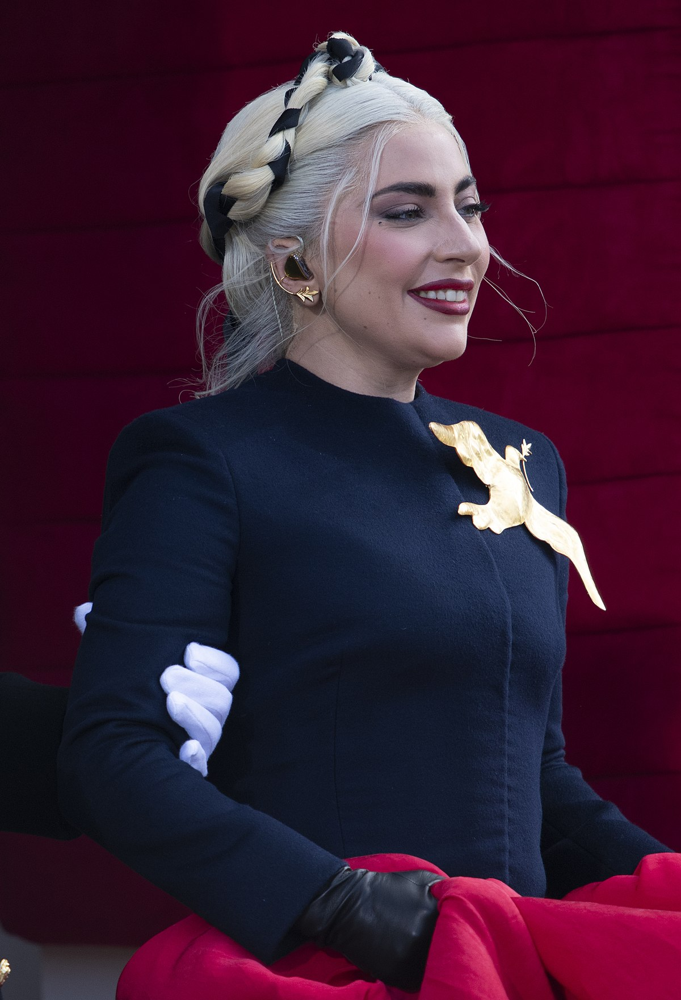

Bem-vindos Little Monster!
A maior artista, cantora, compositora, instrumentista, atriz, produtora musical e empresária.
Visão Geral
Stefani Joanne Angelina Germanotta, mais conhecida pelo nome artístico Lady Gaga, é uma cantora, compositora, instrumentista, atriz, produtora musical e empresária estadunidense.
Albuns

ALGUNS ALBUNS DA COMPOSITORA: ARTPOP, THE FAME, CHROMATICA, A STAR IS BORN, BORN THIS WAY, THE FAME MSONTER JOANNE E ENTRE OUTROS.